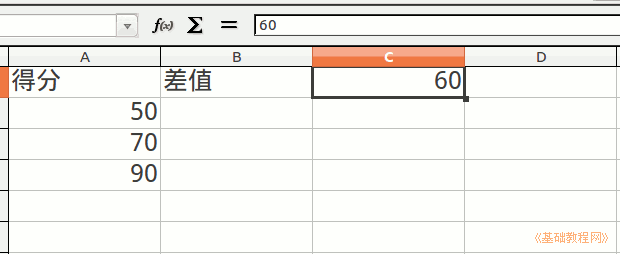
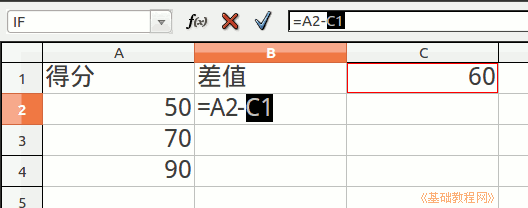
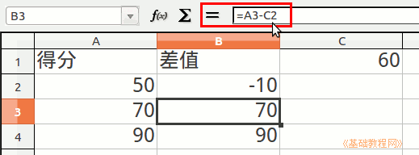
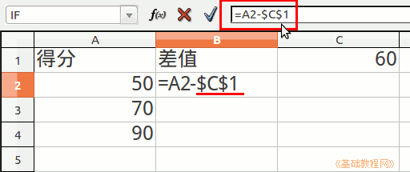
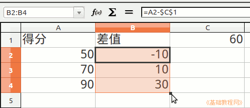

Excel 基础入门教程
相对引用和绝引用 返回
使用自动填充可以自动处理相似的数据；
1、启动Excel
1）点击“开始－所有程序－Microsoft－Microsoft Office Excel 2003"；
2）出现一个满是格子的空白窗口，这就是一张电子表格了，第一个格子看着边框要粗一些，处于选中状态；

2、相对引用和绝引用
1）创建一个分数表，输入三个成绩，再输一个60的数值作为及格分数线；

2）在分数旁边一列中，用减法公式算出第一个分数的与分数线的差值 =a2-c1

3）再用拖动控制手柄的方法，自动填充出剩下成绩的分数差值，这种填充出来的是相对引用；

4）但是会发现出来的成绩不对，点击发现公式中后面C1也跟着变了，点“编辑－撤消”；

5）点击选中算出的第一个差值B2单元格，在编辑栏中在C1的前面都加上美元符号$；

6）加上美元符号后，单元格的位置就固定了，再用拖动的方法自动填充，这样公式就不会随着自动填充而改变；

7）以“绝对引用”为文件名，保存一下文件；
本节学习了Excel中相对引用和绝引用的方法，如果你成功地完成了练习，请继续学习下一课内容；
本教程由86团学校TeliuTe制作|著作权所有
基础教程网：http://teliute.org
美丽的校园……
|
|
|
|
|
|
转载和引用本站内容，请保留作者和本站链接。